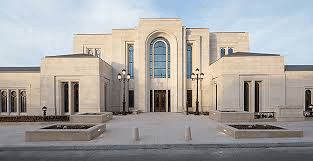

The Paris France Temple is a temple of The Church of Jesus Christ of Latter-day Saints in Le Chesnay, a suburb of Paris, France, and is located near Versailles. The Paris France Temple is the first temple built in Metropolitan France, and the second associated with France, after the Papeete Tahiti Temple.